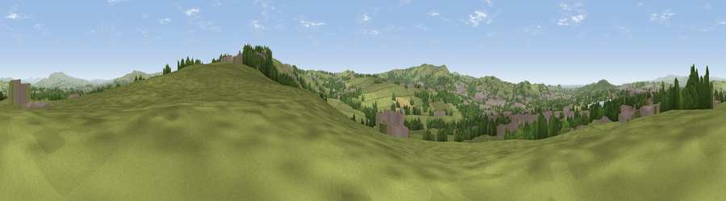

Viewpoint near Guide
#13945 in England · top 31% of its area beats it · near Guide · footpathWhere it is
The exact computed spot (SD 70975 25275). Click the marker for map links.
Public access: a public right of way passes within 22 m of this spot. Computed from Natural England's CRoW access layer and OpenStreetMap rights of way — not the legal definitive map. Always verify locally.
The view, rendered

A 360° render of this exact spot computed from the terrain model, tree cover and land cover — summer colours, afternoon light, calibrated against photographs of famous viewpoints. Real trees, hedges and buildings will differ in detail.
The panorama
Grey silhouette: terrain skyline in each direction (720 bearings, Earth curvature and refraction included). Dashed green: skyline with trees (+15 m) and buildings (+8 m) as obstacles. Blue strip: how far the ground is visible on each bearing.
Where the view opens
Wedge length = distance to the farthest visible ground on that bearing (vegetation-aware). Rings at 10, 25 and 50 km.
What fills the view
61% grassland · 19% built-up · 17% woodland · 1% water · 1% cropland
Angular shares of the visible panorama (visual magnitude), not map area. Landscape diversity 0.45 (0–1 Shannon).
Key numbers
More beautiful places nearby
The staircase of upgrades: each row has a higher view potential than everything closer. Driving times are estimates from straight-line distance, calibrated against real road routing — check an actual route before setting out.
| Place | Direction | Drive | Score |
|---|---|---|---|
| Viewpoint near Belthorn | SE · 3 km | ~6 min | 63.8 |
| Viewpoint near Belthorn | ESE · 3 km | ~7 min | 67.2 |
| Viewpoint near Tockholes | WSW · 4 km | ~10 min | 74.7 |
| Darwen Hill | SW · 5 km | ~11 min | 80.7 |
| Rivington Pike | SSW · 13 km | ~24 min | 81.9 |
| White Brow | SSW · 14 km | ~25 min | 82.9 |
| Warton Crag | NNW · 52 km | ~74 min | 83.2 |
| Viewpoint near Grange-over-Sands | NNW · 62 km | ~84 min | 83.4 |
53.72307, -2.44135 · source: screening · position refined by local search. Computed location — check access rights before visiting.